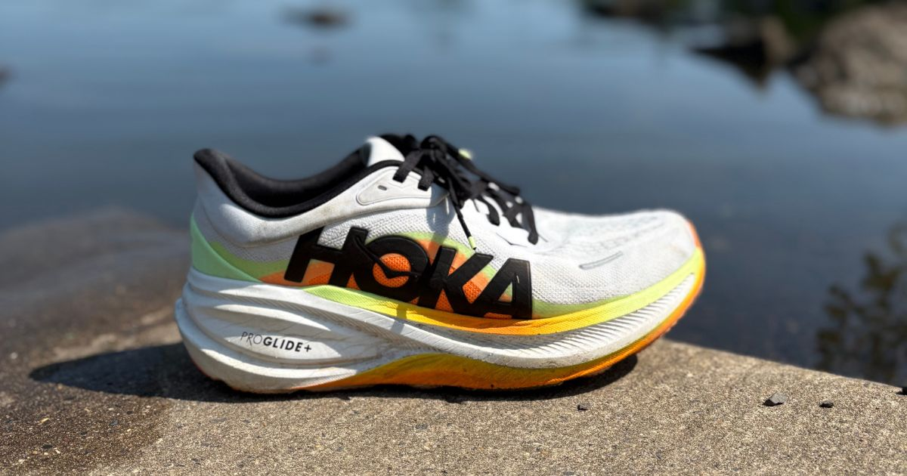
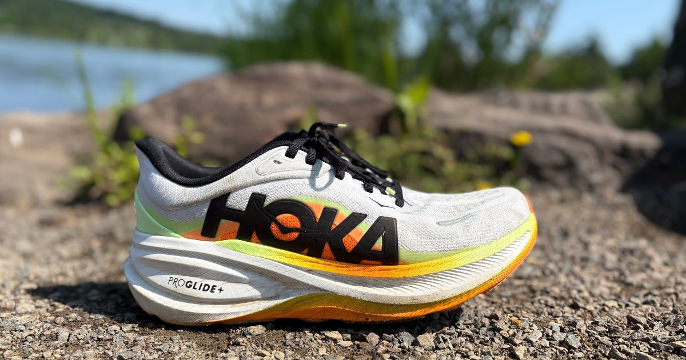

The HOKA Clifton has been one of the most recognizable daily trainers on the market for years, so when HOKA introduced the Clifton Pro, our ears definitely perked up. Was this going to be a true premium version of one of running's most popular shoes, or simply a Clifton with a new name? After putting plenty of miles into the Clifton Pro, here's what we found.

Miles Tested
The Good
Cody
I've been lucky enough to run in most of the recent Clifton models, so I had a pretty good idea of what to expect. The biggest surprise came from the midsole. HOKA gave the Clifton Pro a lively ride thanks to its SCF EVA (Supercritically Foamed EVA) midsole. I've been critical of HOKA in the past for some of their midsoles feeling a little "meh," but that's not the case here. The foam feels noticeably more energetic, and the rocker geometry helps create a smooth, effortless ride.
The Clifton Pro is also more versatile than I expected. It handles easy runs, daily miles, and long runs with ease, but what impressed me most was how comfortable it felt when picking up the pace. I wouldn't call it a speed-day shoe, but if your long run finishes with marathon pace or you decide to push the final few miles, the Clifton Pro responds much better than previous Clifton models.
Finally, the upper deserves some praise. It's breathable, comfortable, and true to size. HOKA's sizing has been a little inconsistent throughout 2026, so when they get it right, it's worth mentioning. This is one of the better-fitting uppers I've worn from the brand recently.
Blake
The Clifton Pro feels like a more refined and energetic take on the regular Clifton. This is also happens to be a replacement for the Skyflow. The Clifton Pro is softer, bouncier, and noticeably roomier than the Skyflow, making it a more comfortable option for just about every type of run. The rocker is incredibly smooth (and slightly more aggressive than the one found on the regular Clifton), and the midsole has a lively bounce thanks to the SCF EVA (Supercritically Foamed EVA).
What surprised me most is that, despite not being a particularly lightweight shoe, I found myself getting up on my toes and picking up the pace from time to time simply because the rocker and forefoot bounce felt so good. The midsole also reminds me a lot of the Mach, offering a similar responsive, energetic feel.
The Clifton Pro also fills a nice gap in Hoka's lineup. If you've always felt the standard Clifton was a little too soft or mushy, this offers a more responsive ride without giving up the comfort people expect from the Clifton name.
Emily
There's a lot of good to talk about here. For starters, I loved the upper. It's more premium than the Clifton 11 and the midfoot area of the shoe has a great lockdown. The mesh material is thin and breathes well for a shoe that's max cush. I'm really glad Hoka didn't totally overdo it here with the upper and managed to find a balance of comfort and performance, for the most part.
My favorite thing about the Clifton PRO is the PROGLIDE+ midsole. Made of Supercritical EVA, it has a little more punch than the standard EVA in the Clifton 11. The foam is just an absolute joy to run in. It won't WOW you, but it's everything you need to get your day-to-day miles in. The aggressive Metarocker technology really brings it all together, providing a seamless roll through the toe with every stride. I used this shoe for everything from daily training runs, to long runs, and even a tempo workout! While it wouldn't be my first choice for a faster effort, the Clifton PRO really held its own in all scenarios.
I also loved the traction pattern and performance of the outsole. Hoka is using Super Abrasion Rubber that grips surfaces with ease. I felt the rubber doing its job throughout each phase of my stride.
If I didn't have a ton of shoes to review, it could easily be the one shoe I'd always rock.
Eric
Comfort is great on these across the board. A thicker tongue that isn’t too overwhelming, cushioned heel, all while staying decently breathable. Underfoot the SCF EVA foam is soft and supportive without being overly mushy. This is the type of shoe that just rolls through really nice and keeps your legs feeling relatively fresh

The Bad
Cody
The biggest issue isn't how the shoe runs—it's the name.
I'm still confused by the decision to call this the Clifton Pro. When I hear "Pro," I expect something that feels truly premium or significantly different. While I genuinely enjoyed this shoe, it honestly feels more like what the Clifton 11 or Clifton 12 could have been rather than the start of an entirely new lineup. It seems like HOKA wanted to improve the Clifton without moving too far away from a shoe that runners already love, and that makes the "Pro" branding feel a little forced.
The other minor complaint is the break-in period. I have a slightly wider foot, and on the first run the forefoot felt a little cramped. Thankfully, after a few miles the upper relaxed and the fit became much more comfortable.
Blake
The biggest thing holding the Clifton Pro back is the midsole. Yes, I enjoyed the foam, and it's a fun ride, but after trying Hoka's ATPU foam in the Rocket X Trail, it's hard not to imagine how much better this shoe could be with that same material. With "Pro" in the name, people naturally expect race day foams or other premium technologies. The current foam is good, but there's another level of energy return and responsiveness this shoe could've achieved with ATPU.
Besides that, the weight is a bit heavy on paper compared to some of today's lighter premium trainers, even if the smooth rocker helps disguise it once you're running.
Emily
Not a ton to complain about here. While I did like the upper, I don't love the gigantic Hoka logo on the medial side. Not only is aesthetic not my vibe but I think they could have done more with the breathability if it wasn't there. It might also be a little lighter if they got rid of that giant thing.
I also do not like a single colorway of this shoe so far. They just look kinda...dorky?
My main gripe isn't even with the shoe and is more about the marketing. When you put the word "PRO" in the name, it insinuates that the shoe is about speed and performance. That's not what the Clifton PRO is about. Perhaps Hoka should have used "PLUS" instead. This should have just been the Clifton 11 but that's another conversation entirely.
Eric
I don’t know how you can have a more runner friendly version of a shoe that weights more than its standard counterpart! That paired with the continual usage of EVA (though as mentioned it’s nice) leaves me a little confused regarding where Hoka was going with this one. There isn’t anything in particular that I want to know on this shoe necessarily. Maybe that it’s not the most pace versatile and having the “Pro” naming next to essentially just a nice cushioned daily trainer is deceiving
The Verdict
Cody
To be honest, I went into this review looking for reasons not to like the Clifton Pro. Instead, the more miles I put into it, the more I enjoyed it.
The improved midsole, smoother ride, and added versatility have made this one of my favorite daily trainers from HOKA. If I were choosing between the Clifton 11 and the Clifton Pro, I'd take the Clifton Pro every time.
Just don't expect a revolutionary leap. This isn't a completely new shoe—it's a better Clifton. If you go in with that expectation, I think you'll be really happy.
Blake
The Clifton Pro feels like the Clifton got injected with some Mach DNA. It's for runners who've always wanted a little more speed and responsiveness from the Clifton. While the "Pro" name may be a bit misleading, I found myself enjoying this shoe more than the regular Clifton 11, especially on everyday runs and long runs. That being said, I think I do like the regular Clifton 11 better for slower, easier days.
I think the midsole still has room to evolve, but this is a welcome addition to Hoka's lineup. And if a future Clifton Pro 2 gets a more premium foam, it could be something really special.
Emily
I love this shoe. I honestly didn't think I would. I thought it was going to be bulky, heavy, slow, etc, when in reality it's a smooth operator for miles. Again, if I wasn't reviewing shoes, this would be my workhorse.
Eric
Overall the Clifton Pro is a solid shoe. I do think that people need to have shoes like this in their rotation, work horses that will take on a lot of miles. That being said for this to be the pro version is a little strange to me. This could have easily been the Clifton 11 and I think more people would have been happy with it. Again, the shoe is good, not amazing, not special, but good.
Worth The Price?
Cody
If you're buying the Clifton Pro for running, the $165 price tag is absolutely worth it. At only $10 more than the Clifton 11, the upgraded midsole and improved ride easily justify the extra cost.
If you're primarily looking for a walking or casual everyday shoe, I'd save the $10 and grab the Clifton 11. But if your goal is logging running miles, I'd spend the extra money and choose the Clifton Pro.
Blake
The Clifton Pro makes sense if you're looking for a cushioned trainer that leans a little more toward performance than the standard Clifton. It offers a smoother, more responsive ride than the Skyflow while still being comfortable enough for everyday miles. If your priority is a lively, rockered daily trainer, it's easy to recommend. I'm glad this shoe isn't $180 though, because I think it would be harder to justify, but at $165 you get a good amount of protection for the price.
Emily
YES. For $165 you're getting a durable shoe that can handle the majority of paces. If you're between the Clifton PRO or the standard Clifton 11, spend the extra $10 and get the PRO. I think you'll be happy you did.
Eric
At this price point you’re competing against the 1080v15 and Triumph 24. Both of those options have better foams in terms of responsiveness but are equally as good for daily and recovery miles. Now the Pro IS $5 cheaper so I’ll say that ultimately it comes down to preference of foam density and feel. While I don’t think it’s overpriced, I do think there are subjectively “better” options there
Buy If
- You want a smooth, cushioned daily trainer with more energy than the standard Clifton.
- You need one shoe for daily miles, long runs, and occasional faster finishes.
- You enjoy an aggressive rocker that keeps you rolling forward.
- You are deciding between the Clifton 11 and Clifton Pro for running.
Skip If
- You expect the word “Pro” to mean race-day foam or a lightweight speed shoe.
- You want the lightest premium daily trainer available.
- You primarily need a walking or casual shoe and can save money with the Clifton 11.
- You prefer a highly responsive ATPU-style ride over a smoother EVA-based feel.
Disclosure
Disclosure: This product was provided by the manufacturer for review. As always, they had no input into our testing, opinions, or final verdict.